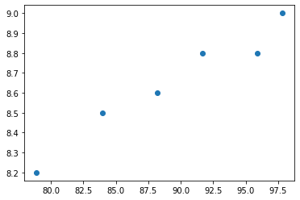
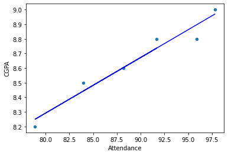

Attendance and CGPA Regression
Author: Mohammed Adeen Shaik
Review date: 11 October 2026
Research question
What linear association appears in the six supplied semester observations?
Data and provenance
Assessment/gradepred.xlsx, containing six semester records.
Source materials are linked from the repository README. Input fingerprints are recorded in the evidence manifest so a reader can identify the exact committed artifacts used in this review.
Method and analytical rationale
An ordinary least squares line relates attendance percentage to CGPA. Coefficient, intercept and R-squared describe the fit to those same six observations.
Findings and interpretation
The supplied workbook contains six semester observations. The original least-squares fit reports a slope of 0.03805779 CGPA per attendance percentage point, an intercept of 5.24699972, and training R-squared 0.94951765. These describe the six-point fit only; no independent test performance or causal attendance effect is established.
Limitations
This is an instructional fit with no held-out evaluation. Six records cannot establish a reliable prediction service or causal effect of attendance on grades.
Reproduction
Use the setup commands and input contract in the repository README. Open the notebook catalogue for annotated code and saved outputs. Keep raw records and model binaries local; public reports contain aggregate results or source-embedded figures.
Final visual results

Figure from 452.LinearRegression.ipynb, original code cell 21.

Figure from 452.LinearRegression.ipynb, original code cell 41.